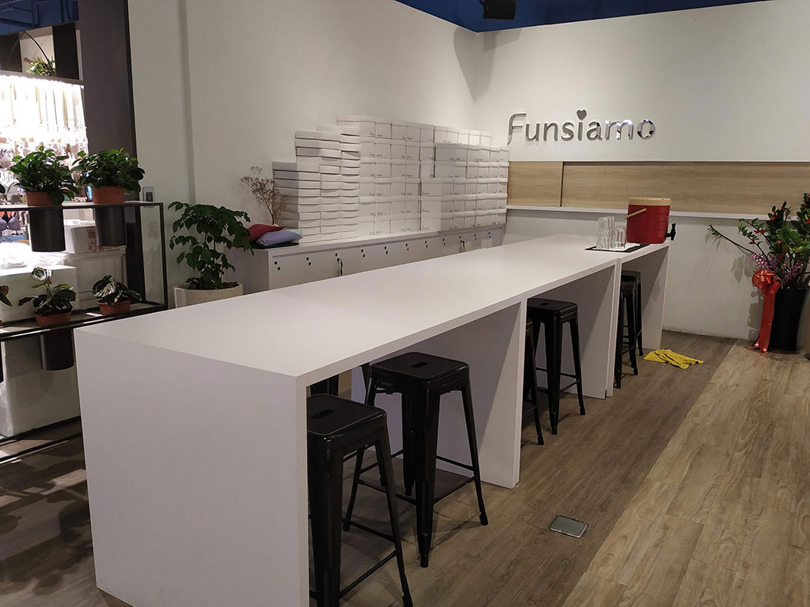

最近幾年有很多自己做甜點的店，很久之前曾經去過其中一家，還蠻好玩的，今年男友生日決定讓他自己做自己的生日蛋糕
台北自己做蛋糕的店真的是很多，看了很多家後最後決定就是Funsiamo了，因為想要兩個人一起做一個，其他很多家都是要一個人做一份甜點的，不然就要加收陪同費用，而且一人做一份感覺太沒有分工合作的fu了
還有就是他的菜單的官網也做得比較有質感哈哈，有些做的比較可愛，但是我比較想要感覺時尚一點的；再來就是他的點也不少，可以找到距離較近的分店
不過最重要的就是他不用自己洗碗啦~多年前去的那家店就是自己使用過的設備自己要清洗，這家真的是懶人可以去的店哈哈
當天去的是京站的分店，位在二樓的內衣專櫃裏面，繞了一圈想說怎麼找不到，還以為跑錯地方，原來是隱藏在一堆內衣之中
一進去左邊是他的櫃台，櫃台上面有一些蠟燭隻類的商品可以加購
旁邊的置物櫃店員會先請你放包包，如果做完後要在這邊吃做好的甜點好像也可以，只是餐具可能要加購吧(? 因為我們是帶回家，所以店員有幫我們用盒子裝起來，像是外面的蛋糕店一樣

進去後一人可以喝一杯飲料，飲料就放在上一張照片的紅色飲料桶裡面，一開始的時候店員就會請大家自己添。老實說這邊我還蠻失望的，因為看別人的分享是可以選不同的口味，而且是裝在外帶飲料杯裡面，但是當天去的時候就像是在外面的牛排店喝飲料一樣，沒有其他口味或是冷熱的選擇，也不能續杯，不知道是為什麼會有這樣的差別
店裡面的空間沒有很小，當天早上去的時候客人也沒有很多，加上我們總共四組而已，不過還是比較建議先預約，這樣才能確保有想做的甜點的食材
店員會先將當天會使用到的材料放在桌上，跟圍裙還有平板，基本上就是看著平板一步一步操作來完成今天的蛋糕
不過有些東西可能平板教你這樣做，但實際上沒有那項配備，像是我們在拿出烤好的蛋糕的時候，平板上面寫要我們用厚的手套拿出來，在用另外一個薄手套把他放涼，但實際上沒有那個薄手套，店員直接叫我們用厚手套處理
還有我也有點疑惑的一點是，在做的時候會發現有些材料店員沒有給齊，要我們自己去跟他們講，甚至後來我們沒看到最後要墊在蛋糕上的方形紙板，去跟店員要的時候，他也不馬上給，跟我說那個你要做到後面才用的到，但是我們就是準備要用到了才跟你要的，我也是有點黑人問號啦，不知道是這家店本來就這樣還是分店的問題，不過基本上店員還是蠻親切的啦，有問題跟他講他會幫你處理
桌下的籃子也放了很多會使用到的材料
攪拌器、微波爐、電磁爐一應俱全
還有洗手台跟冷熱水的地方
冷藏區會放需要用到的材料或是做到需要冷藏的東西也是拿來這邊放
烤箱區，每個烤箱都有對應的數字，要使用對應的烤箱，不可以隨意選擇，然後一開始的時候平板上會先告訴你是不是要先預熱烤箱
上面的桌子是放涼的區域，下面好像是冷凍庫
放涼的桌子旁邊有使用過的器材放置區跟垃圾桶，你使用過的鍋碗瓢盆就可以直接放在這邊
當天製作的是難易度為一的"得體蛋糕”，應該是取名自dirty吧，因為蛋糕最後會灑一堆可可粉
蛋糕在烤箱裡面考的樣子
烤好後變得超澎的
最後再做上妝飾後的樣子，他可以放在可以旋轉的座上面，不知道那個叫什麼哈哈，不過蛋糕放在上面抹奶油很有fu
最後做好的蛋糕可以放在一些墊板上拍照，這個就是草地的，還有大理石、線條等等的可以選擇，或是他也有一個小舞台可以拍照，不過我沒有特別喜歡哈哈，噢 然後他有附一些可以立起來的自拍棒，有需要的人可以自己去拿取

這是回家後切來吃的樣子，蛋糕是濕潤的可可海綿蛋糕，上面是可可鮮奶油，再撒上可可粉，一整個就是熱量很高的可可蛋糕哈哈，不過真的是很好吃，他們的食材用的還不錯
整體來說是值得去看看的一家店啦，畢竟做出來的成品不錯吃，而且不用自己洗碗
壽星的話還有壽星優惠唷，可以上他們的fb去詢問
然後他們整天的話是分三個場次進去的，不是隨時都可以做唷~想去Funsiamo自己做蛋糕的人可以去他們的官網參考看看
詳細資訊
Funsiamo時間⏰:週日~週四11:00~21:30；週五週六11:00~22:00
Funsiamo電話📞:02 2559 5580
Funsiamo位置🏠:台北市大同區承德路一段1號京站時尚廣場2F 點我看GOOGLE地圖
Funsiamo臉書📱:點我看臉書
Funsiamo官網💻:點我看官網 👈去的前幾天可先至官網預約唷